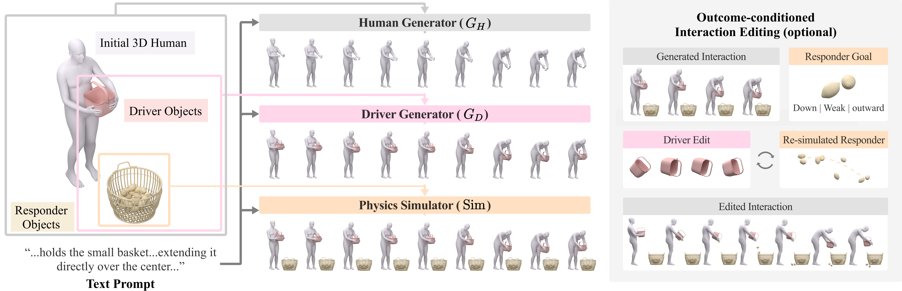

BUMP
Body-Driven Unified Multi-Object
Physics for HOI Synthesis
Seoul National University † Corresponding author
Learn intentional motion.
Simulate physical consequences.
Generate the human and the objects they manipulate. Let physics complete the interaction.
Abstract
Generating human-object interactions (HOIs) with multiple objects is challenging because the resulting motions arise from different underlying causes. Human motion reflects semantic intent, intentionally manipulated objects must remain coordinated with the human, while surrounding objects move primarily as physical consequences of contact and collision. We present BUMP, a text-driven framework for multi-object HOI generation based on a simple principle: learn intentional motion and simulate physical consequences. Our method first generates full-body human motion from text and scene context, then predicts trajectories for a small number of intentionally manipulated driver objects conditioned on the human motion. Rather than explicitly generating every moving object, we obtain responder object motions through physics simulation, allowing the framework to handle varying numbers and configurations of surrounding objects without expanding the learned trajectory output space. To address the scarcity of paired full-body multi-object HOI data, we combine heterogeneous supervision from human-only motion, full-body HOI, and hand-centric manipulation data augmented with plausible body motion. We further introduce outcome-conditioned interaction editing, which infers a local modification of the causal driver object trajectory from a desired responder object behavior without requiring an explicit target driver object trajectory. Experiments demonstrate strong performance on both single-object and multi-object HOI benchmarks. Qualitative results showcase diverse scenarios involving inter-object relationships and edits, highlighting the advantage of our unified model formulation.
01 · Human and object roles
Different objects. Different roles.
Human motion drives the interaction. Objects respond in two distinct ways.
Scene video unavailable.
HumanGenerated motionWhite full-body human
DriverGenerated trajectoryIntentionally manipulated
ResponderSimulated responsePhysically induced
02 · The method
Generate the intent. Simulate the rest.
Human and driver motion are learned; responder motion is resolved by physics.

Video unavailable. Please try another browser.
Video unavailable. Please try another browser.
Video unavailable. Please try another browser.
03 · Dataset construction
From partial observations to full-body interaction.
Observed hands and upper bodies become complete, aligned 3D motion.
These are the actual reconstructed TACO and OakInk2 mesh sequences. Opaque surfaces show observed human regions; low-opacity meshes show predicted, unobserved regions. Drag a mesh to inspect it from another angle.
Interactive meshes load when this section approaches view.
04 · Outcome editing
Outcome-Conditioned Driver Editing
Edit driver motion to achieve a desired physical outcome.
Frying pan · Original + 4 edits
Video unavailable. Please try another browser.
ReferenceUnedited reference
Video unavailable. Please try another browser.
Requested goalUpward motion · strong · clockwise rotation
Video unavailable. Please try another browser.
Requested goalUpward motion · strong · counter-clockwise rotation
Video unavailable. Please try another browser.
Requested goalUpward motion · strong · inside-to-outside rotation
Video unavailable. Please try another browser.
Requested goalUpward motion · strong · outside-to-inside rotation
Video unavailable. Please try another browser.
ReferenceUnedited reference
Video unavailable. Please try another browser.
Requested goalUpward motion · strong
Video unavailable. Please try another browser.
Requested goalDownward motion · strong
BibTeX
@misc{woo2026bumpbodydrivenunifiedmultiobject,
title={BUMP: Body-driven Unified Multi-object Physics for HOI Synthesis},
author={Wonjung Woo and Hyeonwoo Kim and Hanbyul Joo},
year={2026},
eprint={2610.27066},
archivePrefix={arXiv},
primaryClass={cs.CV},
url={https://arxiv.org/abs/2610.27066},
}